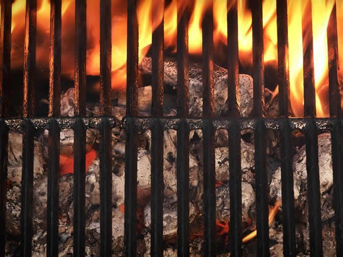
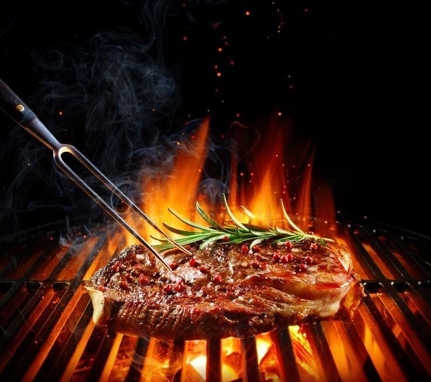
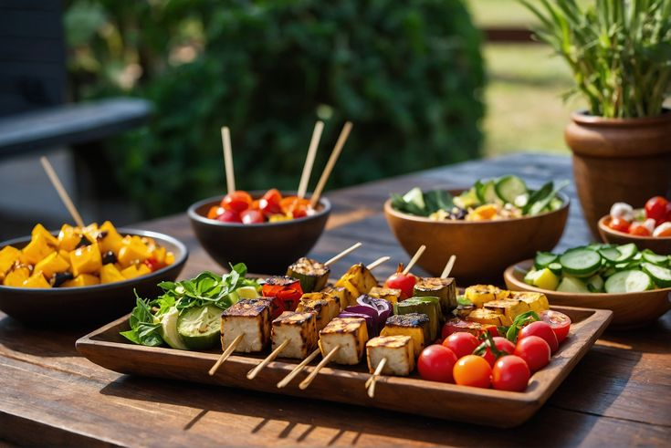
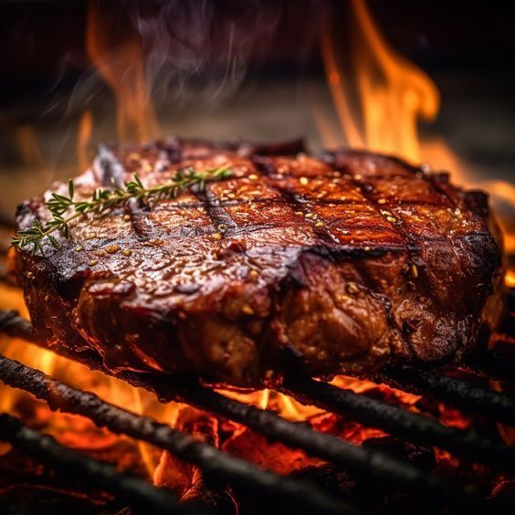
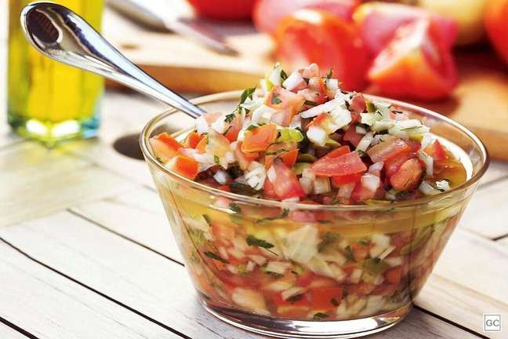

Sobre nós
Bebidas
Alcoólicas
Não alcoólicas
Churrasco
Carnes
Acessórios
Receitas
Dicas
Churrasco
Drinks
Coqueteis e Sobremesa
Loja
Contato
 7 Pecados do Churrasco
 Manual Básico do Churrasco
 Churrasco Vegetariano
 Receitas de Churrasco Carne de Bovina
Receitas de Churrasco Carne de Frango
 Vinagrete para Churrasco